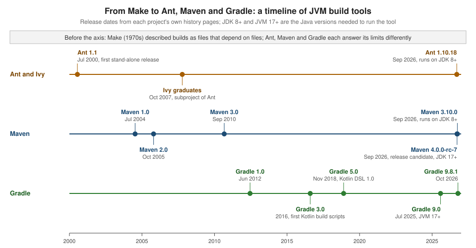

Build Automation Fundamentals
|
This content was generated with the assistance of AI and should be verified against the official documentation before being relied on in production. |
This page is written against Apache Ant 1.10.18, Apache Maven 3.10.0 (with 3.9.16 also in use, and Maven 4.0.0-rc-7
named as a release candidate) and Gradle 9.8.1 (8.14 noted where it differs). Every example was run on JDK 26 on
2026-10-16 with the Ant, Maven and Gradle releases named in the text. The small example project and its three build
files were written for this page: the tidepool model library, a single module of the larger scenario used across this
section, holds one record (Height) and one JUnit Jupiter test class, and is built with Ant, Maven and Gradle from
three copies of the same source tree. Paths in the console output were shortened to /work/tidepool-model.
The page answers two questions that come before any tool syntax: why a build should be a program instead of a checklist, and which ideas Ant, Maven and Gradle share. The dependency half of the story is on Dependency Management Fundamentals; the side-by-side verdict is on Comparing Ant, Maven & Gradle. For the tools themselves start at Apache Ant, Apache Maven or Gradle.
Why automate the build
A build turns source files into something that can be run and shipped: compiled classes, a tested and packaged JAR,
documentation, a distribution. Doing that by hand, with an IDE button or a list of javac and jar commands in a wiki,
fails in predictable ways: steps are forgotten or reordered, the result depends on whose machine produced it, and nobody
can say which sources and which library versions went into the file that reached production. A build tool replaces the
list with a description that a machine executes, and the description is then code that lives in version control beside
the sources.
The benefits are the same for all three tools:
-
Repeatable. The same inputs run through the same steps produce the same outputs, on a laptop and on a server. This is what lets a failed build be investigated and a good one be trusted.
-
Portable. The build runs the same on any developer machine and on the integration server, without an IDE. Ant does it by calling Java classes (tasks) instead of shell commands, as its manual explains; Maven and Gradle go further and fetch the plugins and libraries the build needs.
-
On demand, triggered or scheduled. A developer runs a build on demand from a terminal. A continuous integration server runs it when a push or a pull request triggers it, and runs it on a schedule for nightly or release builds. All three styles use the same command, which is why a build must not need a person at the keyboard (see CI & IDE Integration).
-
The build as code. Because the build is a file, it can be reviewed, diffed, tested, branched and rolled back along with the application. A change to the way the JAR is made is a commit with an author and a reason.
Requirements follow from those goals, and they are the checklist against which Ant, Maven and Gradle can be compared: run the steps in dependency order, without repeating work that is already done; fail loudly and stop at the first failure; resolve libraries from repositories instead of copies in the source tree; run unchanged on any machine and in CI; be extensible with new kinds of step; and produce output that is identical when the input is identical. The next sections take each requirement in turn.
Source: Apache Ant manual: Introduction
Source: Maven: Maven’s objectives
Source: Gradle: Core concepts
The anatomy of a build tool
Every JVM build tool consists of the same parts, under different names:
| Part | Ant 1.10.18 | Maven 3.10.0 | Gradle 9.8.1 |
|---|---|---|---|
Unit of work |
a task ( |
a goal of a plugin ( |
a task ( |
Grouping and ordering of units |
a target lists the tasks it runs and the targets it |
a phase of a lifecycle ( |
tasks declare |
Description of the project |
the |
the POM ( |
|
Inputs and outputs |
files named by properties, filesets and paths; the build file decides |
fixed by convention: |
declared on each task; Gradle compares them between runs |
Dependency management |
none in the core; Apache Ivy or the Maven Resolver Ant Tasks add it |
built in, coordinates in the POM, scopes |
built in, coordinates in the build script or a version catalog, configurations |
Extension mechanism |
Java tasks, macros, Antlibs |
plugins and extensions written in Java |
plugins and build logic written in Kotlin, Groovy or Java |
The rest of this page follows the table from the second row down. Dependency management is a topic of its own on Dependency Management Fundamentals.
The build graph
All three tools treat a build as a graph of steps in which an edge means "this step needs that one to have run first". The tool turns the request on the command line into the set of steps to run, orders them so that dependencies come first, and runs each step. The vocabulary and the shape of the graph differ, and the differences matter in daily use.
The three graphs describe "compile, test, package" for the tidepool-model module. Ant’s graph is the one the author
wrote, target by target. Maven’s is a straight line of phases that the jar packaging fixes in advance, with the plugin
goals that do the work bound to the phases. Gradle’s is a graph that the java-library plugin assembles from tasks and
their declared inputs and outputs, and in which independent branches (processResources and compileJava) are free to
run in any order or at the same time.
Ant: targets and dependencies
An Ant build file is a project of target elements. A target names the targets it depends on and holds the tasks to
run. Asking Ant for one target runs its dependencies first, depth first, in the order they are listed. This is the full
build file of the example; it declares every directory itself, as Ant has no default layout:
<project name="tidepool-model" default="package" basedir=".">
<property name="src.dir" location="src/main/java"/>
<property name="test.dir" location="src/test/java"/>
<property name="build.dir" location="build"/>
<property name="classes.dir" location="${build.dir}/classes"/>
<property name="tests.dir" location="${build.dir}/test-classes"/>
<property name="jar.file" location="${build.dir}/tidepool-model-1.0.0.jar"/>
<path id="test.classpath">
<pathelement location="${classes.dir}"/>
<pathelement location="${tests.dir}"/>
<fileset dir="lib" includes="*.jar"/>
</path>
<target name="clean" description="delete build output">
<delete dir="${build.dir}"/>
</target>
<target name="compile" description="compile main sources">
<mkdir dir="${classes.dir}"/>
<javac srcdir="${src.dir}" destdir="${classes.dir}" release="21" includeantruntime="false"/>
</target>
<target name="compile-tests" depends="compile" description="compile test sources">
<mkdir dir="${tests.dir}"/>
<javac srcdir="${test.dir}" destdir="${tests.dir}" release="21" includeantruntime="false">
<classpath refid="test.classpath"/>
</javac>
</target>
<target name="test" depends="compile-tests" description="run the unit tests">
<java classname="org.junit.platform.console.ConsoleLauncher" fork="true" failonerror="true">
<arg line="execute --scan-classpath ${tests.dir} --disable-banner --disable-ansi-colors --details=summary"/>
<classpath refid="test.classpath"/>
</java>
</target>
<target name="jar.check">
<uptodate property="jar.uptodate" targetfile="${jar.file}">
<srcfiles dir="${classes.dir}" includes="**/*.class"/>
</uptodate>
</target>
<target name="package" depends="test,jar.check" unless="jar.uptodate" description="build the JAR">
<jar destfile="${jar.file}" basedir="${classes.dir}"/>
</target>
</project>Ant can list the targets that carry a description, and the first run shows the order in which the dependency chain
executed. The first run below started from a deleted build directory, and the test summary lines of the JUnit
console launcher (a plain java call to the JUnit Platform Console Launcher, which is why the lines are prefixed
[java]) were reduced to the line that opens them:
$ ant -p
Buildfile: /work/tidepool-model/build.xml
Main targets:
clean delete build output
compile compile main sources
compile-tests compile test sources
package build the JAR
test run the unit tests
Default target: package
$ ant package
Buildfile: /work/tidepool-model/build.xml
compile:
[mkdir] Created dir: /work/tidepool-model/build/classes
[javac] Compiling 1 source file to /work/tidepool-model/build/classes
compile-tests:
[mkdir] Created dir: /work/tidepool-model/build/test-classes
[javac] Compiling 1 source file to /work/tidepool-model/build/test-classes
test:
[java]
[java] Test run finished after 36 ms
[java]
jar.check:
package:
[jar] Building jar: /work/tidepool-model/build/tidepool-model-1.0.0.jar
BUILD SUCCESSFUL
Total time: 0 secondsThe chain ran compile, compile-tests, test, jar.check and package because package depends on test and
jar.check and test depends on compile-tests, which depends on compile. Ant has no dry-run option: reading the
depends attributes is the way to predict the order, and ant -v or ant -d only add detail to a real run.
A target is executed at most once in the chain that leads to one requested target, even when several targets depend on
it. That is not the same as once per invocation. When two targets are named on the command line, Ant resolves each of
them as a separate chain, so a shared dependency can run twice. This build file has a diamond, all depends on test
and docs, and both depend on compile:
<project name="diamond" default="all">
<target name="compile"><echo>compiling</echo></target>
<target name="test" depends="compile"><echo>testing</echo></target>
<target name="docs" depends="compile"><echo>documenting</echo></target>
<target name="all" depends="test,docs"><echo>done</echo></target>
</project>$ ant -f diamond.xml test docs
Buildfile: /work/tidepool-model/diamond.xml
compile:
[echo] compiling
test:
[echo] testing
compile:
[echo] compiling
docs:
[echo] documenting
BUILD SUCCESSFUL
Total time: 0 secondscompile ran twice because test and docs were requested as two separate targets. ant -f diamond.xml all runs it
once. A build whose targets are expensive therefore gives people one entry point (all, package, release) instead
of a list of targets to combine by hand. The rules of target execution (depends ordering, if and unless, extension
points) are the subject of
Targets & Extension Points.
Source: Apache Ant manual: Targets
Maven: phases and goals
Maven does not ask the author to write the graph. It has three built-in lifecycles, default, clean and site, each
a fixed list of phases, and a packaging type (jar by default) binds plugin goals to some of those phases. Running a
phase runs every phase before it in the lifecycle, and each phase runs the goals bound to it. Phases with nothing bound
do nothing. The default lifecycle includes validate, compile, test, package, verify, install and deploy
(and the process-*, pre-* and post-* phases between them). This is the example module built from a clean tree:
$ mvn -B clean package
[INFO] --- clean:3.5.0:clean (default-clean) @ tidepool-model ---
[INFO] --- resources:3.5.0:resources (default-resources) @ tidepool-model ---
[INFO] skip non existing resourceDirectory /work/tidepool-model/src/main/resources
[INFO] --- compiler:3.16.0:compile (default-compile) @ tidepool-model ---
[INFO] Recompiling the module because of changed source code.
[INFO] Compiling 1 source file with javac [debug release 21] to target/classes
[INFO] --- resources:3.5.0:testResources (default-testResources) @ tidepool-model ---
[INFO] skip non existing resourceDirectory /work/tidepool-model/src/test/resources
[INFO] --- compiler:3.16.0:testCompile (default-testCompile) @ tidepool-model ---
[INFO] Recompiling the module because of changed dependency.
[INFO] Compiling 1 source file with javac [debug release 21] to target/test-classes
[INFO] --- surefire:3.6.0:test (default-test) @ tidepool-model ---
[INFO] Using auto detected provider org.apache.maven.surefire.junitplatform.JUnitPlatformProvider
[INFO] -------------------------------------------------------
[INFO] T E S T S
[INFO] -------------------------------------------------------
[INFO] Running io.tidepool.model.HeightTest
[INFO] Tests run: 2, Failures: 0, Errors: 0, Skipped: 0, Time elapsed: 0.029 s -- in io.tidepool.model.HeightTest
[INFO] Results:
[INFO] Tests run: 2, Failures: 0, Errors: 0, Skipped: 0
[INFO] --- jar:3.5.1:jar (default-jar) @ tidepool-model ---
[INFO] Building jar: /work/tidepool-model/target/tidepool-model-1.0.0.jar
[INFO] ------------------------------------------------------------------------
[INFO] BUILD SUCCESSThe goals that ran are the default bindings of the jar packaging: resources:resources, compiler:compile,
resources:testResources, compiler:testCompile, surefire:test and jar:jar, each from the plugin version printed
in the log (clean:3.5.0, compiler:3.16.0, surefire:3.6.0 because the POM pins it, jar:3.5.1). The clean
lifecycle and the default lifecycle are separate lifecycles, so clean package runs the clean phase of one and then
every phase of the other up to package. The excerpt leaves out the lines that report loaded repository prefixes and
the blank [INFO] lines.
Maven can show the whole lifecycle for a project without running anything. help:describe with -Dcmd=package prints
every phase of the jar lifecycle and the goal bound to it, which is the table behind the straight line in the diagram
(the excerpt leaves out the log lines before and after the list):
$ mvn -B help:describe -Dcmd=package
[INFO] 'package' is a phase corresponding to this plugin:
org.apache.maven.plugins:maven-jar-plugin:3.5.1:jar
It is a part of the lifecycle for the POM packaging 'jar'. This lifecycle includes the following phases:
* validate: Not defined
* initialize: Not defined
* generate-sources: Not defined
* process-sources: Not defined
* generate-resources: Not defined
* process-resources: org.apache.maven.plugins:maven-resources-plugin:3.5.0:resources
* compile: org.apache.maven.plugins:maven-compiler-plugin:3.16.0:compile
* process-classes: Not defined
* generate-test-sources: Not defined
* process-test-sources: Not defined
* generate-test-resources: Not defined
* process-test-resources: org.apache.maven.plugins:maven-resources-plugin:3.5.0:testResources
* test-compile: org.apache.maven.plugins:maven-compiler-plugin:3.16.0:testCompile
* process-test-classes: Not defined
* test: org.apache.maven.plugins:maven-surefire-plugin:3.6.0:test
* prepare-package: Not defined
* package: org.apache.maven.plugins:maven-jar-plugin:3.5.1:jar
* pre-integration-test: Not defined
* integration-test: Not defined
* post-integration-test: Not defined
* verify: Not defined
* install: org.apache.maven.plugins:maven-install-plugin:3.2.0:install
* deploy: org.apache.maven.plugins:maven-deploy-plugin:3.2.0:deployMaven also repeats work when phases are requested separately, in the same way as Ant. mvn clean test package is read
as three requests, and the second lifecycle walk starts again from validate:
$ mvn -B -ntp clean test package
[INFO] --- clean:3.5.0:clean (default-clean) @ tidepool-model ---
[INFO] --- resources:3.5.0:resources (default-resources) @ tidepool-model ---
[INFO] --- compiler:3.16.0:compile (default-compile) @ tidepool-model ---
[INFO] --- resources:3.5.0:testResources (default-testResources) @ tidepool-model ---
[INFO] --- compiler:3.16.0:testCompile (default-testCompile) @ tidepool-model ---
[INFO] --- surefire:3.6.0:test (default-test) @ tidepool-model ---
[INFO] --- resources:3.5.0:resources (default-resources) @ tidepool-model ---
[INFO] --- compiler:3.16.0:compile (default-compile) @ tidepool-model ---
[INFO] --- resources:3.5.0:testResources (default-testResources) @ tidepool-model ---
[INFO] --- compiler:3.16.0:testCompile (default-testCompile) @ tidepool-model ---
[INFO] --- surefire:3.6.0:test (default-test) @ tidepool-model ---
[INFO] --- jar:3.5.1:jar (default-jar) @ tidepool-model ---
[INFO] BUILD SUCCESSThe excerpt keeps only the lines that start a goal and the final status. resources, compiler and surefire ran
twice. The advice of the Maven documentation is to name only the last phase wanted (mvn verify, mvn clean deploy),
which also runs every earlier phase once.
The same module builds unchanged with Maven 4.0.0-rc-7 (release candidate) on the same JDK, and the plugin goals ran in
the same order. Two warnings are new in that release: Maven 4 looks for a .mvn directory to identify the root of the
project, and it warns when the plugin versions of the default bindings are not locked in pluginManagement. See
Build Lifecycle and
Maven 4 Lifecycle.
Gradle: tasks and the task graph
A Gradle build runs in three phases: initialization, which finds the projects, configuration, which evaluates the build
scripts and builds the task graph, and execution, which runs the selected tasks. The java-library plugin registers the
tasks, and Gradle orders them by the dependencies between them. --dry-run (-m) prints the order without running the
actions, which is what Ant is missing:
$ gradle --console=plain --dry-run build
:compileJava SKIPPED
:processResources SKIPPED
:classes SKIPPED
:jar SKIPPED
:assemble SKIPPED
:compileTestJava SKIPPED
:processTestResources SKIPPED
:testClasses SKIPPED
:test SKIPPED
:check SKIPPED
:build SKIPPED
BUILD SUCCESSFUL in 371msThe order is one valid topological sort of the graph in the diagram: compileJava before classes before jar, and
compileTestJava before test. The two branches that do not depend on each other, such as processResources and
compileJava, may be run in either order, and Gradle can run them in parallel when the build is configured for that.
Tasks are ordinary objects, so the build file can also declare the same diamond as the Ant example. In Gradle the shared task runs once even when two requested tasks depend on it:
val compile = tasks.register("compile") {
doLast { println("compiling") }
}
val test = tasks.register("test") {
dependsOn(compile)
doLast { println("testing") }
}
val docs = tasks.register("docs") {
dependsOn(compile)
doLast { println("documenting") }
}
tasks.register("all") {
dependsOn(test, docs)
doLast { println("done") }
}def compile = tasks.register('compile') {
doLast { println 'compiling' }
}
def test = tasks.register('test') {
dependsOn compile
doLast { println 'testing' }
}
def docs = tasks.register('docs') {
dependsOn compile
doLast { println 'documenting' }
}
tasks.register('all') {
dependsOn test, docs
doLast { println 'done' }
}$ gradle --console=plain test docs
> Task :compile
compiling
> Task :test
testing
> Task :docs
documenting
BUILD SUCCESSFUL in 242ms
3 actionable tasks: 3 executedThe Kotlin DSL build file and its Groovy twin produced identical output. compile ran once, in a graph computed for the
whole request, which is the difference with Ant and Maven that a long command line shows most. The state of the graph is
also visible beforehand: the configuration phase finishes before any task action runs, a fact that explains most
surprises about when a println in the body of a task appears. See
Build Lifecycle and
Tasks.
The same build, three vocabularies
| Question | Ant | Maven | Gradle |
|---|---|---|---|
What is a node? |
target |
phase (with goals bound to it) |
task |
Who wrote the graph? |
the build author, with |
the lifecycle and the packaging type |
the plugins, from task inputs, outputs and |
Can the order be previewed? |
no dry run; read |
|
yes, |
Is a shared dependency run once? |
once per requested target |
once per lifecycle walk |
once per build |
Declarative and imperative builds
A build file is declarative when it states what the project is and leaves the how to the tool, and imperative when it states the steps. The three tools sit at different points of that scale, and the position is a design decision with a price:
-
Ant is imperative. The build file above creates directories, calls
javacwith a source and a destination directory, runs the tests and callsjar. Nothing happens that the file does not say, which makes Ant flexible and makes every project re-invent the same few targets. -
Maven is declarative. The POM below gives the coordinates, the Java release and one test dependency. How the module is compiled, tested and packaged is decided by the lifecycle and the plugins, and a goal’s behaviour is changed by configuring a plugin, not by writing a step.
-
Gradle is both. Applying the
java-libraryplugin is declarative, and a task action (doLast) or a custom task is imperative. The usual advice is to keep the build script declarative and put steps in task classes and plugins.
The Maven POM of the example:
<?xml version="1.0" encoding="UTF-8"?>
<project xmlns="http://maven.apache.org/POM/4.0.0"
xmlns:xsi="http://www.w3.org/2001/XMLSchema-instance"
xsi:schemaLocation="http://maven.apache.org/POM/4.0.0 https://maven.apache.org/xsd/maven-4.0.0.xsd">
<modelVersion>4.0.0</modelVersion>
<groupId>io.tidepool</groupId>
<artifactId>tidepool-model</artifactId>
<version>1.0.0</version>
<properties>
<maven.compiler.release>21</maven.compiler.release>
<project.build.sourceEncoding>UTF-8</project.build.sourceEncoding>
<project.build.outputTimestamp>2026-10-01T00:00:00Z</project.build.outputTimestamp>
</properties>
<dependencies>
<dependency>
<groupId>org.junit.jupiter</groupId>
<artifactId>junit-jupiter</artifactId>
<version>6.1.3</version>
<scope>test</scope>
</dependency>
</dependencies>
<build>
<plugins>
<plugin>
<groupId>org.apache.maven.plugins</groupId>
<artifactId>maven-surefire-plugin</artifactId>
<version>3.6.0</version>
</plugin>
</plugins>
</build>
</project>The Gradle build for the same module declares what it is (a Java library, release 21, one test dependency) and says nothing about directories or steps. The plugin supplies the tasks of the graph above:
plugins {
`java-library`
}
group = "io.tidepool"
version = "1.0.0"
tasks.withType<JavaCompile>().configureEach {
options.release = 21
}
repositories {
mavenCentral()
}
dependencies {
testImplementation(platform("org.junit:junit-bom:6.1.3"))
testImplementation("org.junit.jupiter:junit-jupiter")
testRuntimeOnly("org.junit.platform:junit-platform-launcher")
}
tasks.test {
useJUnitPlatform()
}plugins {
id 'java-library'
}
group = 'io.tidepool'
version = '1.0.0'
tasks.withType(JavaCompile).configureEach {
options.release = 21
}
repositories {
mavenCentral()
}
dependencies {
testImplementation platform('org.junit:junit-bom:6.1.3')
testImplementation 'org.junit.jupiter:junit-jupiter'
testRuntimeOnly 'org.junit.platform:junit-platform-launcher'
}
tasks.named('test') {
useJUnitPlatform()
}The Kotlin DSL file, settings.gradle.kts (rootProject.name = "tidepool-model") and the Groovy twin
(settings.gradle) were each run with gradle build and passed. The Kotlin DSL is the default for new builds; a Groovy
DSL build behaves the same and several of the examples in this section show both. The testRuntimeOnly line for
junit-platform-launcher is needed from Gradle 9, which no longer leaks its own copy of the launcher onto the test
runtime class path. Without that line the test task of this module failed on Gradle 9.8.1 with the message
Failed to load JUnit Platform. Please ensure that all JUnit Platform dependencies are available on the test's runtime classpath, including the JUnit Platform launcher.
Convention over configuration and the standard layout
Maven’s design goal is a uniform build: a developer who knows one Maven project can build another without reading its build file. The mechanism is convention over configuration: sensible defaults for everything that does not need to be decided, so a project only configures what is different. The most visible default is the directory layout, which Maven and Gradle share:
$ find src -type f | sort
src/main/java/io/tidepool/model/Height.java
src/test/java/io/tidepool/model/HeightTest.javaSources in src/main/java, resources in src/main/resources, tests in src/test/java, and build output in target
(Maven) or build (Gradle). The POM and the Gradle build file above never mention these directories, and both tools
found the sources. Convention has a cost as well as a benefit: a project that does not fit the layout (generated
sources, a legacy tree) has to configure its way out of it, and a build author needs to know the defaults to read a
build that does not state them.
Ant has no convention: every directory is a property of the build file, as the src.dir, test.dir and build.dir
lines above show. The Ant tutorial recommends a layout of src and build/classes for compiled output, and many
projects copy the Maven layout in their Ant builds so that IDEs and people recognize it. The layout is the first thing
to agree on when a project is moved from one tool to another, and why projects that follow it move easily; see
Migrating Between Tools,
Philosophy, Coordinates & Directory Layout and
Java Projects.
Incremental builds and caching
A repeatable build is only practical if it is also fast when little has changed. Incremental build means skipping work whose inputs have not changed since it last ran; a build cache goes further and reuses outputs produced in an earlier build, possibly on another machine. The three tools differ in how much of this they do on their own.
| Technique | Ant | Maven | Gradle |
|---|---|---|---|
Skip when up to date |
per task: |
per plugin: |
for every task that declares inputs and outputs: |
Reuse of earlier outputs |
none |
the Maven Build Cache Extension (1.3.0), an extension configured in |
the build cache, switched on with |
What decides |
file modification times |
compiler plugin heuristics; for the extension, a checksum of the project inputs |
a hash of the declared inputs (files, properties, classpath, task implementation) |
Ant
Ant has no general incremental engine. Some tasks, javac among them, compare timestamps of sources and outputs; the
uptodate task lets the build author do the same for any target. In the example jar.check sets the property
jar.uptodate when the JAR is newer than every class file, and package carries unless="jar.uptodate". Running it a
second time, the compile targets found nothing to compile and the JAR was not rebuilt, but the tests ran again because
the test target has no such check (the summary lines of the launcher were dropped again):
$ ant package
Buildfile: /work/tidepool-model/build.xml
compile:
compile-tests:
test:
[java]
[java] Test run finished after 25 ms
[java]
jar.check:
package:
BUILD SUCCESSFUL
Total time: 0 secondsTimestamps are a weak signal: a changed build file or a new dependency version does not change any source time, so a
stale output can survive. This is the reason many Ant builds begin with clean.
Source: Apache Ant manual: uptodate
Maven
The compiler plugin keeps track of its own inputs, and the second build of an unchanged module found the classes up to date:
$ mvn -B package
[INFO] --- resources:3.5.0:resources (default-resources) @ tidepool-model ---
[INFO] skip non existing resourceDirectory /work/tidepool-model/src/main/resources
[INFO] --- compiler:3.16.0:compile (default-compile) @ tidepool-model ---
[INFO] Nothing to compile - all classes are up to date.
[INFO] --- resources:3.5.0:testResources (default-testResources) @ tidepool-model ---
[INFO] skip non existing resourceDirectory /work/tidepool-model/src/test/resources
[INFO] --- compiler:3.16.0:testCompile (default-testCompile) @ tidepool-model ---
[INFO] Nothing to compile - all classes are up to date.
[INFO] --- surefire:3.6.0:test (default-test) @ tidepool-model ---
[INFO] Using auto detected provider org.apache.maven.surefire.junitplatform.JUnitPlatformProvider
[INFO] -------------------------------------------------------
[INFO] T E S T S
[INFO] -------------------------------------------------------
[INFO] Running io.tidepool.model.HeightTest
[INFO] Tests run: 2, Failures: 0, Errors: 0, Skipped: 0, Time elapsed: 0.027 s -- in io.tidepool.model.HeightTest
[INFO] Results:
[INFO] Tests run: 2, Failures: 0, Errors: 0, Skipped: 0
[INFO] --- jar:3.5.1:jar (default-jar) @ tidepool-model ---
[INFO] ------------------------------------------------------------------------
[INFO] BUILD SUCCESSsurefire:test ran again, and jar:jar did not rebuild the JAR. Maven’s own core does not track inputs and outputs, so
plugins decide for themselves. The Maven Build Cache Extension adds a project-level cache. It is a core extension,
loaded from .mvn/extensions.xml, which this module declared with version 1.3.0 (it needs no other configuration to
start):
<extensions xmlns="http://maven.apache.org/EXTENSIONS/1.0.0"
xmlns:xsi="http://www.w3.org/2001/XMLSchema-instance"
xsi:schemaLocation="http://maven.apache.org/EXTENSIONS/1.0.0 https://maven.apache.org/xsd/core-extensions-1.0.0.xsd">
<extension>
<groupId>org.apache.maven.extensions</groupId>
<artifactId>maven-build-cache-extension</artifactId>
<version>1.3.0</version>
</extension>
</extensions>Running mvn clean verify twice against a cache directory inside the project (-Dmaven.build.cache.location), the
first build computed a checksum of the inputs, found no earlier result and saved its own, and the second restored the
whole module and skipped every goal, including the tests. The lines below are the cache-related lines of each log. The
JDK 26 run also printed sun.misc.Unsafe deprecation warnings that come from the hashing library used by the extension,
and they were left out:
$ mvn -B -Dmaven.build.cache.location=.build-cache clean verify (first run)
[INFO] Cache is INITIALIZED on project level for io.tidepool:tidepool-model
[INFO] --- clean:3.5.0:clean (default-clean) @ tidepool-model ---
[INFO] Attempting to restore project io.tidepool:tidepool-model from build cache
[INFO] Local build was not found by checksum ac3dacfb904b0277 for io.tidepool:tidepool-model
[INFO] --- resources:3.5.0:resources (default-resources) @ tidepool-model ---
[INFO] --- compiler:3.16.0:compile (default-compile) @ tidepool-model ---
[INFO] --- resources:3.5.0:testResources (default-testResources) @ tidepool-model ---
[INFO] --- compiler:3.16.0:testCompile (default-testCompile) @ tidepool-model ---
[INFO] --- surefire:3.6.0:test (default-test) @ tidepool-model ---
[INFO] --- jar:3.5.1:jar (default-jar) @ tidepool-model ---
[INFO] Saved Build to local file: /work/tidepool-model/.build-cache/v1.2/io.tidepool/tidepool-model/ac3dacfb904b0277/local/buildinfo.xml
[INFO] BUILD SUCCESS
$ mvn -B -Dmaven.build.cache.location=.build-cache clean verify (second run)
[INFO] Cache is INITIALIZED on project level for io.tidepool:tidepool-model
[INFO] --- clean:3.5.0:clean (default-clean) @ tidepool-model ---
[INFO] Attempting to restore project io.tidepool:tidepool-model from build cache
[INFO] Local build found by checksum ac3dacfb904b0277
[INFO] Found cached build, restoring io.tidepool:tidepool-model from cache by checksum ac3dacfb904b0277
[INFO] Skipping plugin execution (cached): resources:resources
[INFO] Skipping plugin execution (cached): compiler:compile
[INFO] Skipping plugin execution (cached): resources:testResources
[INFO] Skipping plugin execution (cached): compiler:testCompile
[INFO] Skipping plugin execution (cached): surefire:test
[INFO] Skipping plugin execution (cached): jar:jar
[INFO] BUILD SUCCESSThe extension is configurable (what counts as an input, which goals are cached, a remote cache) and has its own page: Build Performance: Cache, Parallel & mvnd.
Source: Maven Build Cache Extension
Gradle
Gradle compares the declared inputs and outputs of every task with what it recorded for the previous run. A task whose
inputs and outputs are unchanged is UP-TO-DATE, and a task without inputs or without sources reports NO-SOURCE. The
first run below followed clean, and the second run changed nothing:
$ gradle --console=plain clean build
> Task :clean
> Task :compileJava
> Task :processResources NO-SOURCE
> Task :classes
> Task :jar
> Task :assemble
> Task :compileTestJava
> Task :processTestResources NO-SOURCE
> Task :testClasses
> Task :test
> Task :check
> Task :build
BUILD SUCCESSFUL in 927ms
5 actionable tasks: 5 executed
$ gradle --console=plain build
> Task :compileJava UP-TO-DATE
> Task :processResources NO-SOURCE
> Task :classes UP-TO-DATE
> Task :jar UP-TO-DATE
> Task :assemble UP-TO-DATE
> Task :compileTestJava UP-TO-DATE
> Task :processTestResources NO-SOURCE
> Task :testClasses UP-TO-DATE
> Task :test UP-TO-DATE
> Task :check UP-TO-DATE
> Task :build UP-TO-DATE
BUILD SUCCESSFUL in 350ms
4 actionable tasks: 4 up-to-dateWith the build cache switched on, outputs of cacheable tasks are stored under a key made from the task inputs. After a
clean, the same inputs restore outputs from the cache instead of recomputing them. The excerpt is the second
clean build with --build-cache; compileJava, compileTestJava and test came FROM-CACHE, while jar was
executed, because the Jar task is not cacheable by default:
$ gradle --console=plain --build-cache clean build
> Task :clean
> Task :compileJava FROM-CACHE
> Task :processResources NO-SOURCE
> Task :classes UP-TO-DATE
> Task :jar
> Task :assemble
> Task :compileTestJava FROM-CACHE
> Task :processTestResources NO-SOURCE
> Task :testClasses UP-TO-DATE
> Task :test FROM-CACHE
> Task :check UP-TO-DATE
> Task :build
BUILD SUCCESSFUL in 498ms
5 actionable tasks: 2 executed, 3 from cacheGradle can only do this when a task declares its inputs and outputs, and a task that does not is always executed. A task written as ad hoc code in a build script is neither up to date nor cacheable until its author declares them. See Incremental Build and Build Cache.
Source: Gradle: Incremental build
Source: Gradle: Build cache
Reproducible builds
A build is reproducible when the same sources, built with the same tools, give byte-for-byte identical artifacts. It
matters for security (anyone can check that a published JAR came from a given commit) and for caching. The usual enemies
are timestamps stored in archives, file order that depends on the file system, and absolute paths. The convention that
lets a build use one fixed time is the SOURCE_DATE_EPOCH environment variable: seconds since the Unix epoch, typically
the time of the last commit, which build tools are asked to use instead of the current time.
The experiment below builds the example JAR twice from clean, two seconds apart, and prints the first 16 hexadecimal
digits of the SHA-256 of each result. Two runs with the same digits are a reproducible build. The script (the
MVN_3_9_16 and MVN_3_10_0 variables stand for the two Maven installations) and its output are:
#!/bin/sh
# Build the JAR twice from clean, two seconds apart, and print the start of its SHA-256.
sum() { shasum -a 256 "$1" | cut -c1-16; }
for file in build.xml build-repro.xml; do # Ant 1.10.18
for run in 1 2; do
ant -q -f $file clean compile; sleep 2
ant -q -f $file -Dbuild.timestamp=2026-10-01T00:00:00Z package
echo "ant $file run $run: $(sum build/tidepool-model-1.0.0.jar)"
done
done
for mvn in "$MVN_3_9_16" "$MVN_3_10_0"; do # two Maven installations
for pom in pom-plain.xml pom.xml; do # without and with outputTimestamp
for run in 1 2; do
$mvn -q -B -f $pom clean package; sleep 2
echo "maven $($mvn -v | head -1 | cut -d' ' -f3), $pom run $run: $(sum target/tidepool-model-1.0.0.jar)"
done
done
done
for run in 1 2; do # Gradle 9.8.1
gradle -q clean jar; sleep 2
echo "gradle run $run: $(sum build/libs/tidepool-model-1.0.0.jar)"
doneant build.xml run 1: 523013b6b8fabd19
ant build.xml run 2: 5c84764b25026670
ant build-repro.xml run 1: 43d565d242fdcc82
ant build-repro.xml run 2: 43d565d242fdcc82
maven 3.9.16, pom-plain.xml run 1: 20dc4473c4b1610d
maven 3.9.16, pom-plain.xml run 2: e3ad6feb814e6a58
maven 3.9.16, pom.xml run 1: 3d890192af10c7e1
maven 3.9.16, pom.xml run 2: 3d890192af10c7e1
maven 3.10.0, pom-plain.xml run 1: 3facb0ae3494ea76
maven 3.10.0, pom-plain.xml run 2: 3facb0ae3494ea76
maven 3.10.0, pom.xml run 1: 672aaceb76a65d93
maven 3.10.0, pom.xml run 2: 672aaceb76a65d93
gradle run 1: d434bb6f4265351a
gradle run 2: d434bb6f4265351a-
Ant records the time of the files in the JAR, so two builds of the same sources differ (
build.xml). Themodificationtimeattribute ofjarandzip(since Ant 1.10.2) sets every entry to one time, and with it (build-repro.xml) the two builds were identical. Ant does not readSOURCE_DATE_EPOCHitself, so the build file takes the time from a property,-Dbuild.timestamp=..., that a script can fill in from the last commit.build-repro.xmlisbuild.xmlwith the element<jar destfile="${jar.file}" basedir="${classes.dir}"/>extended bymodificationtime="${build.timestamp}". -
Maven switches plugins that support it (the JAR plugin among them) into reproducible mode when
project.build.outputTimestampis set, and writes that time into the archive entries. The value is an ISO 8601 date or a number of seconds, and release tooling can update it. On Maven 3.9.16 the property has to be set: without it (pom-plain.xml) the two builds differ, and with it (thepom.xmlshown above,2026-10-01T00:00:00Z) they are identical. Maven 3.10.0 gives the property a default in the Super POM, so builds are reproducible by default: the two builds ofpom-plain.xmlwere identical and the JAR entries are dated 1980-02-01. A project still sets its own value, usually the time of the last commit, to record something meaningful. The digests of different Maven releases differ because each release binds different default plugin versions, so compare builds only within one release. -
Gradle makes archives reproducible by default since 9.0: a fixed file order, fixed timestamps (the
jarentries of the example are dated 1980-02-01) and fixed permissions, and the two builds were identical without any setting. A build can opt out withisPreserveFileTimestamps = trueandisReproducibleFileOrder = falseon the archive tasks. On Gradle 8.14 the archive tasks keep file system timestamps and file order unless the build setsisPreserveFileTimestamps = falseandisReproducibleFileOrder = trueon them (written from the documentation, not run here).
Identical bytes also need the same JDK: the META-INF/MANIFEST.MF that Ant wrote included
Created-By: 26+35-2893 (Oracle Corporation), so a build on another JDK writes a different manifest, and may compile to
different class files. The security side of this subject is on
Supply Chain Security and
Security & Reproducible Builds.
Source: SOURCE_DATE_EPOCH specification
Source: Gradle: Reproducible archives
Source: Apache Ant manual: zip
A short history
The tools arrived in answer to one another, and knowing the order explains many of their habits.

-
Make (1970s) described a build as files that depend on files, with a shell command per rule. Its weakness for Java was portability: the commands are shell commands, and the file format is sensitive to tabs. The Ant manual names those two reasons as the motive for a new tool.
-
Ant began inside Tomcat and was split off in January 2000. Its first stand-alone release was 1.1 on 19 July 2000. It put the build in XML and the work in Java classes, which made it portable and easy to extend, and left each project to write its own targets. Ant 1.10 runs on Java 8 or later.
-
Maven started in the Jakarta Alexandria and Turbine projects to give projects a uniform build. Maven 1.0 was released on 13 July 2004 and Maven 2.0 on 20 October 2005. It introduced the POM, the lifecycle, convention over configuration and repositories with coordinates. Maven 3.0 followed on 8 October 2010.
-
Ivy added dependency management to Ant builds. It graduated as a subproject of Ant on 11 October 2007.
-
Gradle 1.0 was released on 12 June 2012: a Maven-style model (plugins, conventions, repositories) in a build language with real programming constructs, in Groovy. Gradle 3.0 (2016) added the first support for build scripts in Kotlin, and Gradle 5.0 (26 November 2018) made the Kotlin DSL production ready.
-
Now. Maven 3.10.0 (September 2026) still runs on Java 8 or later; Maven 4.0.0-rc-7 (release candidate) needs Java 17. Gradle 9.0 (31 July 2025) needs a JVM 17 or later to run, and Gradle 9.8.1 is the current release. Ant 1.10.18 was released in September 2026.
The decisions of the three tools, in the order of the timeline, are the reason the shared ideas on this page look so similar and the vocabularies so different. The verdict on when to use which is on Comparing Ant, Maven & Gradle.
Source: Apache Ant FAQ: Ant’s history
Source: Maven: Release history
Source: Maven: History of Maven
Source: Apache Ivy: home page and news
Source: Gradle: Releases
Source: Gradle 5.0 release notes
Source: Gradle: Upgrading to 9.0, JVM 17
Where older books are out of date
Books written in the early years of each tool are still useful for the ideas on this page, but several of their practices no longer apply, and the current form is the one shown here.
-
A 2002 book on Ant targets Ant 1.5 and a JDK 1.1 baseline. Ant 1.10 needs Java 8 or later, and a current
javacrejects the oldsource="1.4"setting; thereleaseattribute is the current way. -
A 2009 book on Maven 2 assumes that Java 5 is enough and that plugin versions can be left out. Maven 3.9 and 3.10 need Java 8, Maven 4 needs Java 17, and the 3.10 super POM no longer manages plugin versions, so every plugin version should be pinned, as the example POM does for Surefire.
-
A 2014 book on Gradle 1.7 uses
task name << { ... }, which was removed in Gradle 5.0 (usedoLast, ortasks.register), and thecompile,testCompileandruntimeconfigurations, removed in 7.0 (useimplementation,apiandtestImplementation). It runs on JDK 5, while Gradle 9 needs a JVM 17 or later and a daemon that is on by default since 3.0.
Source: Gradle: Upgrading from 4.x
Source: Gradle: Upgrading from 6.x
Source: Apache Ant manual: javac
Where to go next
-
Dependency Management Fundamentals for coordinates, scopes, conflicts and BOMs.
-
Repositories & Publishing Across Tools for where artifacts come from and go.
-
Comparing Ant, Maven & Gradle for a decision guide.
-
Running Ant, Running Maven (CLI) and Command-Line Interface for the commands used above.
-
CI & IDE Integration for triggered and scheduled builds.